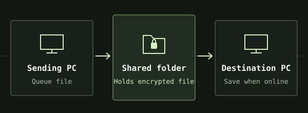

File Relay
Deliver a file between Windows PCs using an always-on shared folder

File Relay delivers a file between two Windows computers when the destination is asleep or TapSend is closed there. A third computer needs to stay on and provide a shared folder both endpoints can write to. That folder holds encrypted file contents until the destination returns.
Set up the route
- Confirm the sending PC and destination PC can open the same writable network share in File Explorer, for example
\\relay-pc\share. - On the destination PC, open TapSend. Press : and run
relay create \\relay-pc\sharewith the real share path. TapSend copies a relay pass to the clipboard. - Move the pass privately to the sending PC. Copy it there and press Shift+J in TapSend.
The pass gives access to the encrypted lane. Share it only with the sending endpoint you trust.
Send and confirm a file
- On the sending PC, press F and focus a file. Press : and run
relay send. - Run
relay statusto see the latest delivery. Holding means the file is staged on the relay for the destination. - Start TapSend on the destination PC. It collects the file into the Relay folder inside its configured inbox. The sender's status changes to SAVED once the destination confirms.
Keep the shared folder available until the destination collects the file. File Relay currently uses Windows endpoints and a network share. For delivery from Windows to an offline paired Android phone, use Send Later.